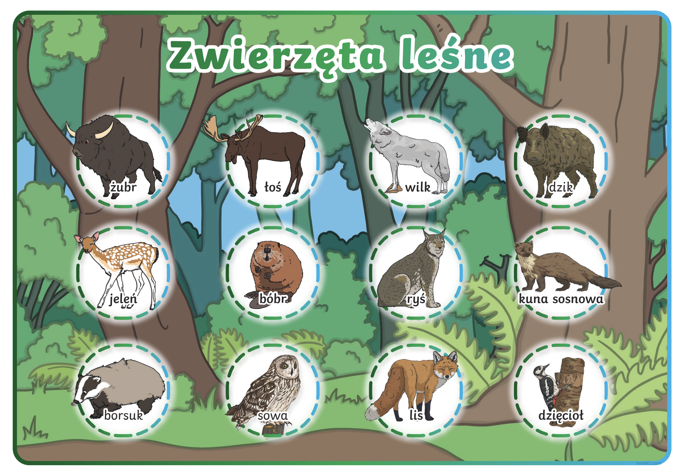

Przyroda > Świat zwierząt > Zwierzęta leśne
Świat zwierząt
🌲 Zwierzęta leśne
(Лесные животные)
🏞️ 1. Co to znaczy „zwierzęta leśne”?
Что значит „лесные животные”?
Zwierzęta leśne – это животные, которые живут в лесу.
В лесу много деревьев, кустов, мха и укрытий — там животные могут жить, искать еду и прятаться от врагов.
🦌 2. Przykłady zwierząt leśnych
Примеры лесных животных:
-
🐗 Duże zwierzęta (Крупные животные):
- jeleń – олень
- sarna – косуля
- dzik – кабан
- łoś – лось
- niedźwiedź – медведь (в горах)
-
🦊 Średnie i małe zwierzęta (Средние и мелкие):
- lis – лиса
- wilk – волк
- borsuk – барсук
- zając – заяц
- wiewiórka – белка
- jeż – ёж
- kunа – куница
-
🐦 Ptaki leśne (Лесные птицы):
- sowa – сова
- dzięcioł – дятел
- gołąb leśny – лесной голубь
- kukułka – кукушка
🌰 3. Co jedzą zwierzęta leśne?
- Rośliny – растения, листья, owoce (фрукты), jagody (ягоды), grzyby (грибы)
- Orzechy i żołędzie – орехи и жёлуди
- Inne zwierzęta – хищники едят мясо (например, lis, wilk)
- Owady – насекомые (jeż, dzięcioł)
🏡 4. Gdzie mieszkają?
- w norach – в норах (lis, dzik, borsuk)
- w dziuplach – в дуплах деревьев (sowa, dzięcioł, wiewiórka)
- w gęstych krzakach – в кустах (jeleń, sarna)
- pod liśćmi – под листьями (jeż)
